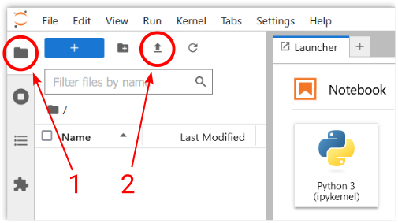
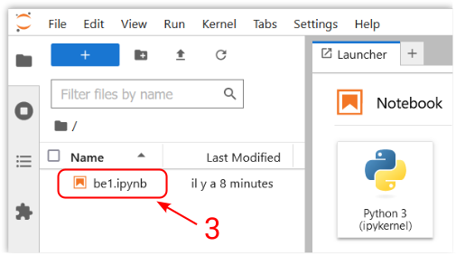

JupyterLab - Instructions de démarrage#
Vocabulaire#
Un carnet Jupyter est un carnet électronique (notebook en anglais) qui permet de mixer narration, calculs et visualisation de résultats. Il est composé d’une séquence de cellules qui contiennent soit du texte brut, soit du texte riche (format markdown), soit du code informatique qui peut être exécuté et dont le résultat s’affiche dans la cellule.
L’application Jupyter assure les interactions entre le carnet Jupyter et le noyau d’exécution du code informatique, dans notre cas un interpréteur de langage Python. c’est la dorsale (backend en anglais) de Jupyter.
JuperterLab est une interface utilisateur (frontend en anglais) de Jupyter.
Lancement de JupyterLab#
Pour utiliser un carnet, il faut disposer de l’application Jupyter et de son interface JupyterLab :
ouvrir un navigateur web (firefox, chrome, egde, safari, …) sur votre appareil (ordinateur, tablette …),
ouvrir la page du serveur JupyterHub de l’université Paris-Saclay se trouvant à l’adresse https://jupyterhub.ijclab.in2p3.fr/, la page de connexion au serveur s’affiche,
se connecter avec vos identifiants de l’école en cliquant sur le bouton Se connecter et en suivant les instructions, la page d’accueil du serveur s’affiche,
cliquer sur le bouton Start JupyterLab, l’interface JupyterLab s’ouvre.
Si la connexion au serveur ne fonctionnement pas, une solution alternative consiste à suivre le lien https://jupyterlite.rtfd.io/en/stable/try/lab, une version plus légère de l’application Jupyter est entièrement chargée et exécuter dans votre navigateur web.
L’interface de JupyterLab se compose :
d’une barre de menu située en haut qui expose les actions disponibles dans JupyterLab avec leurs raccourcis clavier.
d’une zone principale de travail qui permet d’organiser des documents (carnets, fichiers texte, etc.) et d’autres activités (terminaux, consoles de code, etc.) dans des panneaux d’onglets qui peuvent être redimensionnés ou subdivisés avec la possibilité de faire de glisser un onglet d’une zone vers une autre.
d’une barre latérale gauche rétractable qui propose en particulier
un navigateur de fichiers
la table des matières qui permet de visualiser et de naviguer facilement sur la structure d’un document
Utilisation du carnet Jupyter#
Pour utiliser le carnet avec JupyterLab dans le serveur JupyterHub, il faut au préalable téléverser le carnet sur le serveur:
ouvrir le gestionnaire de fichiers en cliquant ➀ dans la barre latérale gauche (ou Ctrl+Maj+F)
cliquer ➁ sur l’icône de téléversement de fichier, puis sélectionner le fichier
be1_embed.ipynbsur votre appareil, le fichier apparait dans la liste des fichiers disponible sur le serveur.doublecliquer ➂ sur l’icône du fichier
be1_embed.ipynbdans la liste des fichiers disponible sur le serveur JupyterHub
le carnet s’ouvre dans JupyterLab
En fin de séance, pour télécharger le fichier modifié, cliquer ➂ avec le bouton droit et sélectionner dans le menu contextuel l’item “Télécharger”.